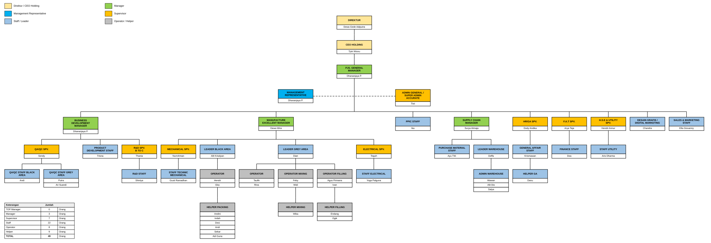

Struktur organisasi
Susunan jabatan di PT Urban Asia Industri dari direktur hingga operator. Sumber: PT Urban Asia Industri (2026).
Pimpinan
DirekturDewa Gede Adiputra
CEO HoldingTjok Wisnu
PJS. General ManagerDhananjaya P.
Management RepresentativeDhananjaya P.
Admin General / Super Admin AccurateTiwi
Di bawah PJS. General Manager terdapat sembilan bagian (lihat bagan dan rincian di bawah).
Bagan lengkap

Tekan Perbesar lalu geser (drag) bagan untuk membaca. Warna kotak: direktur/CEO, manager, supervisor, staff/leader, operator/helper.
Rincian per bagian
Business DevelopmentBusiness Development Manager: Dhananjaya P.
- QA/QC SPV. — Sendy
- QA/QC Staff Black Area — Andi
- QA/QC Staff Grey Area — Putra, Ari Suandi
- Product Development Staff — Trisna
- R&D SPV. B to C — Thania
- R&D Staff — Shintya
Manufacture ExcellentManufacture Excellent Manager: Dewa Wira
- Mechanical SPV. — Nurrohman
- Staff Technic Mechanical — Gusti Ramadhan
- Leader Black Area — Alit Krisdyan
- Operator — Hendri, Eka
- Helper Packing — Andini, Indah, Desi, Andi, Sekar, Adi Guna
- Leader Grey Area — Dian
- Operator — Taufik, Rina
- Operator Mixing — Feby, Widi
- Helper Mixing — Wika
- Operator Filling — Agus Primana, Ivan
- Helper Filling — Endang, Ogik
- Electrical SPV. — Teguh
- Staff Electrical — Yoga Palguna
PPICPPIC Staff: Ika
Supply ChainSupply Chain Manager: Surya Atmaja
- Purchase Material Staff — Ayu TW.
- Leader Warehouse — Deffa
- Admin Warehouse — Wawan, Alit Dio, Satya
HR / GAHR/GA SPV.: Dody Andika
- General Affair Staff — Krismawan
- Helper GA — Danu
F.A.TF.A.T SPV.: Arya Teja
- Finance Staff — Dea
H.S.E & UtilityH.S.E & Utility SPV.: Hendri Annur
- Staff Utility — Aris Dharma
Desain Grafis / Digital MarketingDesain Grafis / Digital Marketing: Chandra
Sales & MarketingSales & Marketing Staff: Ella Giovanny
Jumlah karyawan
| Jabatan | Jumlah |
|---|---|
| Top Manager | 0 orang |
| Manager | 3 orang |
| Supervisor | 7 orang |
| Staff | 22 orang |
| Operator | 8 orang |
| Helper | 9 orang |
| Total | 49 orang |